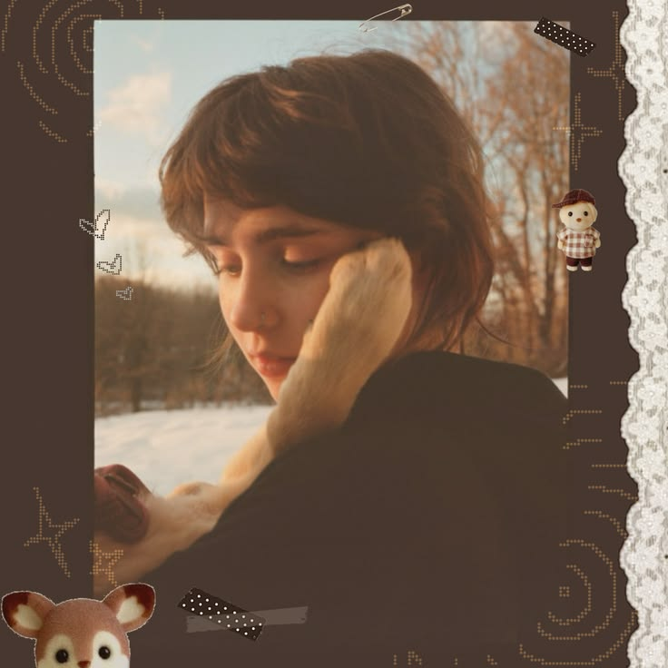

A LITTLE MESS, ENTIRELY MINE
hi, i'm
loveyy.
A person with too many tabs open in her brain. I make things, collect feelings from songs and films, get lost in imaginary worlds, and occasionally remember to finish a project.
musician-ish · maker · daydreamer
currently transmitting from Mars
THAT FEELS LIKE YOU.— note to self, probably

sound on, world offAN OPEN SCRAPBOOK / ALWAYS TURNING
01 / THE MUSIC PAGES
songs i live inside.
Clairo softness. Radiohead unease. Lowertown guitar noise. Little pieces of music that follow me around.
02 / THE FILMS PAGES
frames i keep.
The awkwardness, the strange dreams, the wanting to leave and the missing home. A few stories that linger.
03 / THE OTHER WORLDS PAGES
somewhere else.
Night City, the Oldest House, the end of the road. Worlds to disappear into, and reasons to build my own.
IN THE MARGINS / THE REFERENCE SHELF
NOT A DEFINITIVE LISTthings that made me feel something.
Not a ranking. Not a personality test. Just a few artists and worlds that have left fingerprints on me.
the good stuff sticks around ↗Clairo · Radiohead · Charli XCX · Lowertown · Mazzy Star · Wisp · beabadoobee · Feist · TV Girl · Arctic Monkeys · Phoebe Bridgers · Alex G · Olivia O. · Angus & Julia Stone
The Breakfast Club · Lady Bird · The Perks of Being a Wallflower · Children of Men · Once Upon a Time in Hollywood · The Master
Death Stranding · Cyberpunk 2077 · Control · Life Is Strange · surreal places, lonely roads, beautiful ruins
Analog textures · guitar sounds · odd little websites · character-driven stories · late-night thoughts · things that are a bit hard to explain
04 / WORK IN PROGRESS
WIP IS A VALID STATE OF BEINGi make things
because i can't not.
Music, software, game ideas, half-written stories. Different ways of trying to make the inside of my head exist somewhere outside it.
visit the workbench ↗A LITTLE NOTE BEFORE YOU GO
you made it this far.
That is either very sweet or you have excellent procrastination skills. Both are welcome here.